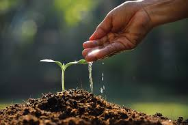
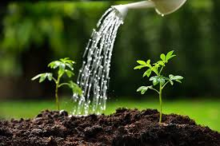
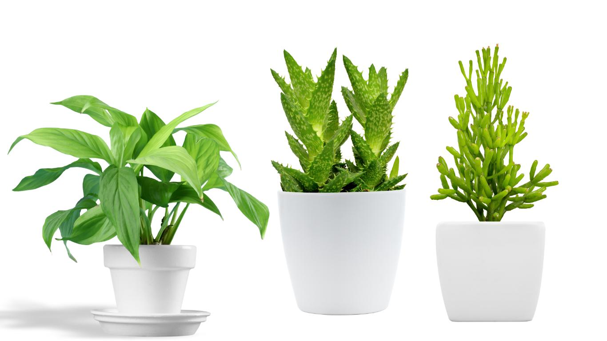
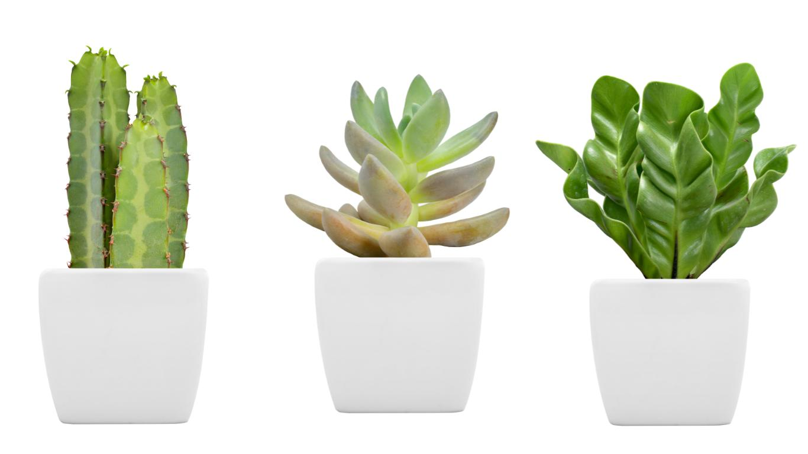

Water is life, but too much or too little can harm your plants. Learn how to identify when your plants are thirsty and the best ways to water them based on their needs.
 Some plants love basking in the sun, while others thrive in the shade. Discover how to find the perfect lighting conditions for your plants to grow strong and vibrant.
The right soil provides essential nutrients for healthy growth. Explore different soil types and how to enrich them for the best plant care results.
A good home is key to a plant’s health! Learn when and how to repot your plants to give them room to grow while avoiding root-bound stress.
 Regular pruning keeps plants healthy and looking their best. Find out how to trim leaves, remove dead growth, and encourage new blooms the right way.